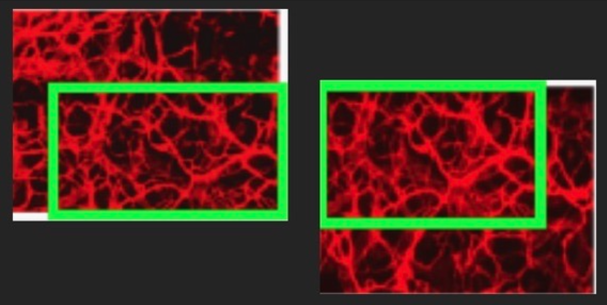
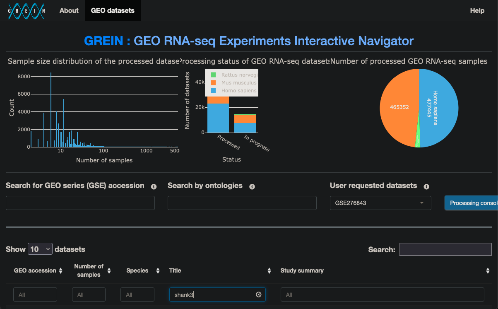
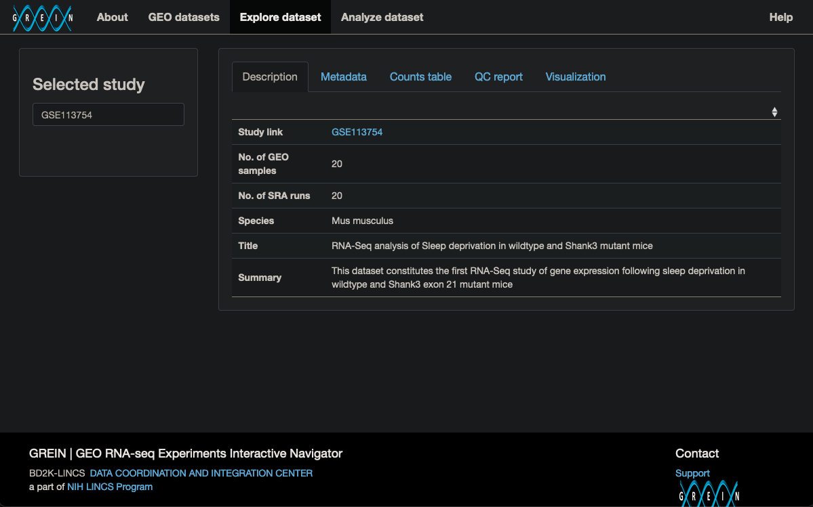
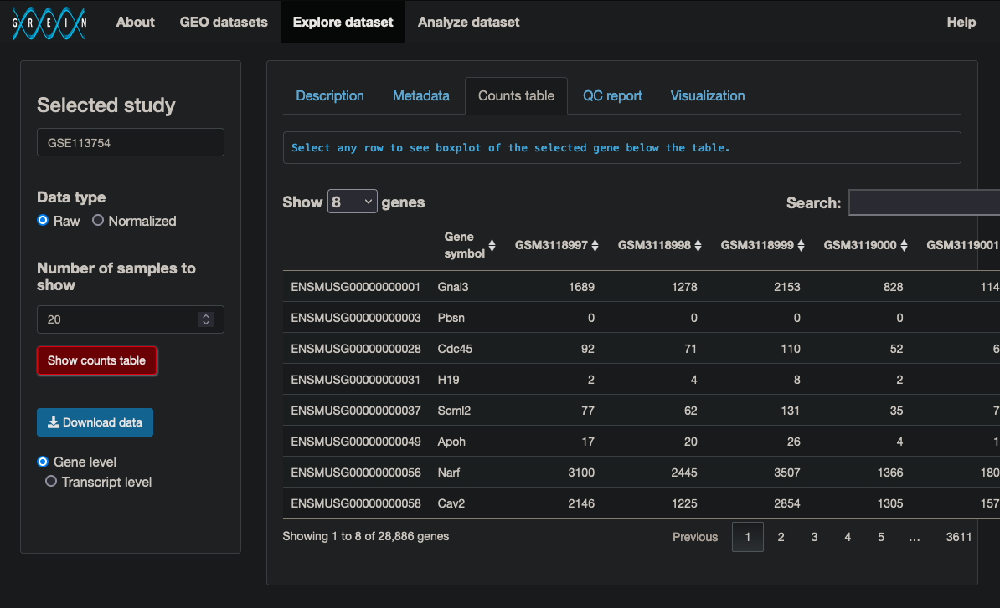
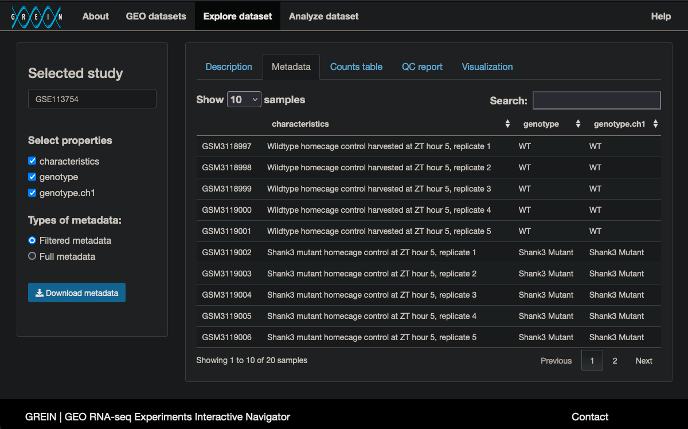
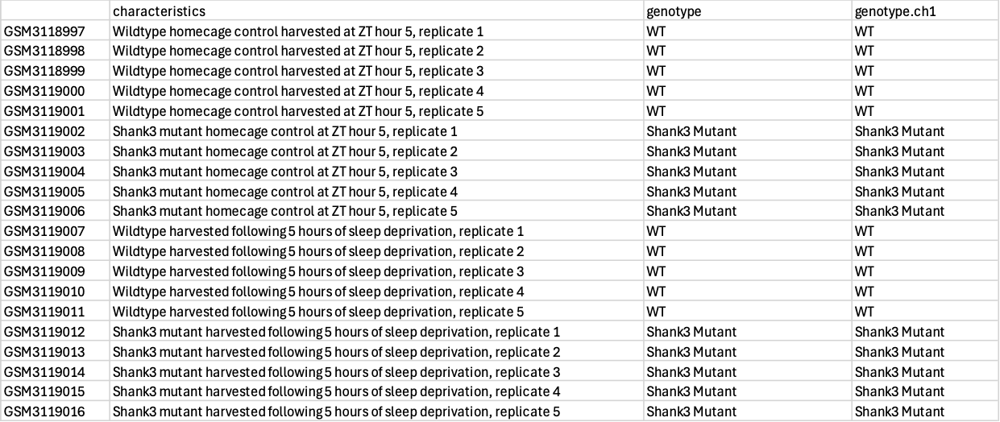
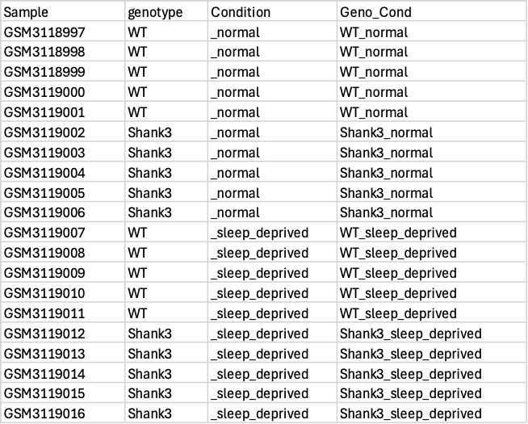
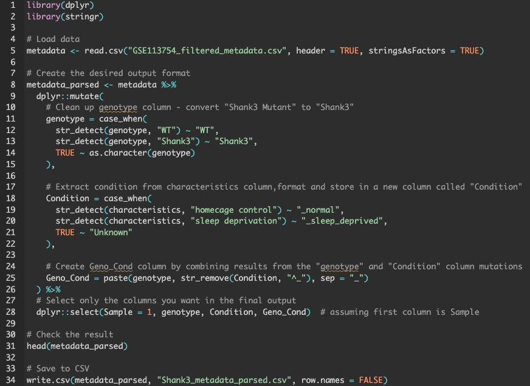

Introduction to
Programming in R Part 1:
Project Management
True Story: Data Management Gone Awry

True Story: Data Management Gone Awry

Author Explanation
“…several postdocs and students were involved in this project from 2008 to 2018. We, as a team, have careful examined the original files and data folders. We have identified the potential processes that could cause the mistakes, including file transfer, image processing and figure assembly. All these mistakes were made unintentionally and inadvertently during the processes. We sincerely apologize for any impact that might have caused.”
Where in the computational process did this happen?
“Upon complete of the STZ study in the lab, Dr. X left Yale and other lab members helped transfer files and processes from microscope facility to the lab computer. During the figure assembly, one panel of images in the WT/ECKO group were mistakenly considered as the STZ group while the real STZ panel was not used for the figure assembly…Due to this mistake, essentially all images from Fig.7f for STZ were from the WT/ECKO study.”
How does this happen?
Pipeline Gaps - different pieces of the process done in different environments
File Transfers - dragging and dropping allows for errors
Filenaming Variation - images were not grouped by file name
Reproducible research from the ground up
- Get some research data
- Set up an R project
- Manage data
Pick a repository

Pick a dataset

Download raw data

Download metadata

Metadata we downloaded

Metadata we want

Why do this in R?
If we did it in Excel…
When we do it in R…

Data Processing
Excel
Processes one observation at a time
Opportunity for copy/paste errors
Steps are not documented
New file means redoing all steps
Setup time may be shorter
R
Processes entire vectors of observations
No copy/paste errors during processing
Code can document itself
New file means a small change (if any)
Setup may take longer
Computational Performance
| Dataset | 20 rows | 1,000 rows | 100,000 rows | 1,000,000 rows + |
|---|---|---|---|---|
| Excel | fast | slowing | crashing | cannot open |
| R | fast | fast | fast | fast |
R’s Flexibility Creates New Responsibilities
Efficiency - You can still write code that runs slowly
Best practices - R is agnostic to readability, optimal analysis, data ethics
Data management - Explicit instructions are needed to select and organize pipelines, folders, files
Information - Code that runs is not always code that produces desired or understandable results
Meet R where it’s at
R Projects - Keep your files organized
README - Document what you do
File Naming Conventions - Name your files consistently
Workflow automation - Use code to handle repetitive tasks
Look beyond R - Use complimentary tools
What Are R Projects?
Self-contained workspace for each analysis or research project
Automatic working directory management. No more setwd()
Seamless integration with version control and documentation tools
WHEN and WHERE to Create R Projects
WHEN: At the very beginning, before writing any code
WHERE: Create a dedicated folder for each project inside of one “Code” or “R_Projects” folder
One R project = one research question/paper/analysis (not one project for all your R work)
Data Management Advantages to R Projects
Relative file paths work everywhere
input_file <- "raw_data/GSE113754_GeneLevel_Raw_data.xlsx" #thisinput_file <- "C:/Users/Username/Code/ARCS/raw_data/GSE113754_GeneLevel_Raw_data.xlsx" #NOT this
Share projects easily (zip the folder, send to collaborators/your future self)
Clear project boundaries (everything stays together)
What is Git?
Version control system - like track changes for your entire project, not just one document
Takes snapshots of your project at different points in time
Remembers what changed
Works locally on your computer
Different from GitHub - Git is the technology, GitHub is the website
Every R Project can use Git
Building Reproducible Projects
What we just built:
Organized File Structure - dedicated folders
Protected Raw Data - original data stays untouched
R Project + Git - portable, trackable, self-contained
Complete README - project map, instructions, data sources
Why this matters:
Makes your project understandable
Anyone can run your analysis
Anyone can verify your results
Future-proofs your projects (when initialized early and modified regularly)
File Naming Conventions
No spaces (use underscore or en dash)
Start with dates using International Organization for Standardization (ISO)
- YYYYMMDDHHMMSS
Use descriptive names
File Naming Conventions
❌ Bad Examples:
data analysis.R(spaces)data.csv(not descriptive)final_FINAL_really_final.R(version chaos)
✅ Good Examples:
2024-03-15_survey_analysis.Rparticipant_demographics_clean.csvREADME.md
Automating File Naming (Line 132)
What this script does:
Generates standardized file names automatically
Demonstrates how to set up your own data analysis functions
Asks for minimal configuration changes
Builds on the reproducible foundation we created
Why ARCS
Learn computational skills while establishing best practices
Think about the future as you are forming habits
Document and automate iteratively
Give your work collaborative potential
…so reproducibility becomes how you work, not someone else’s checklist.
Advancing Reproducibility with Computational Skills